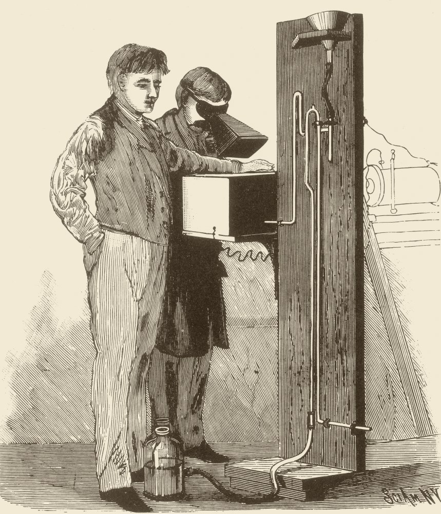
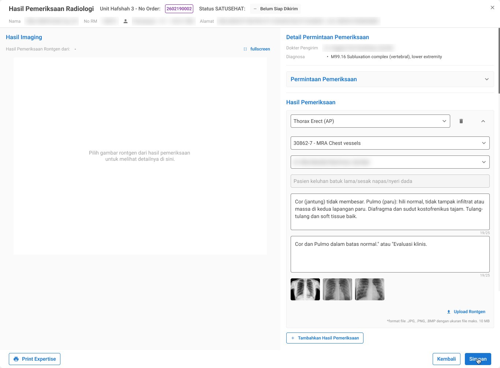
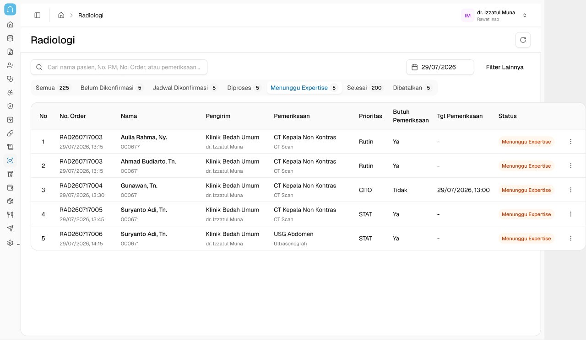
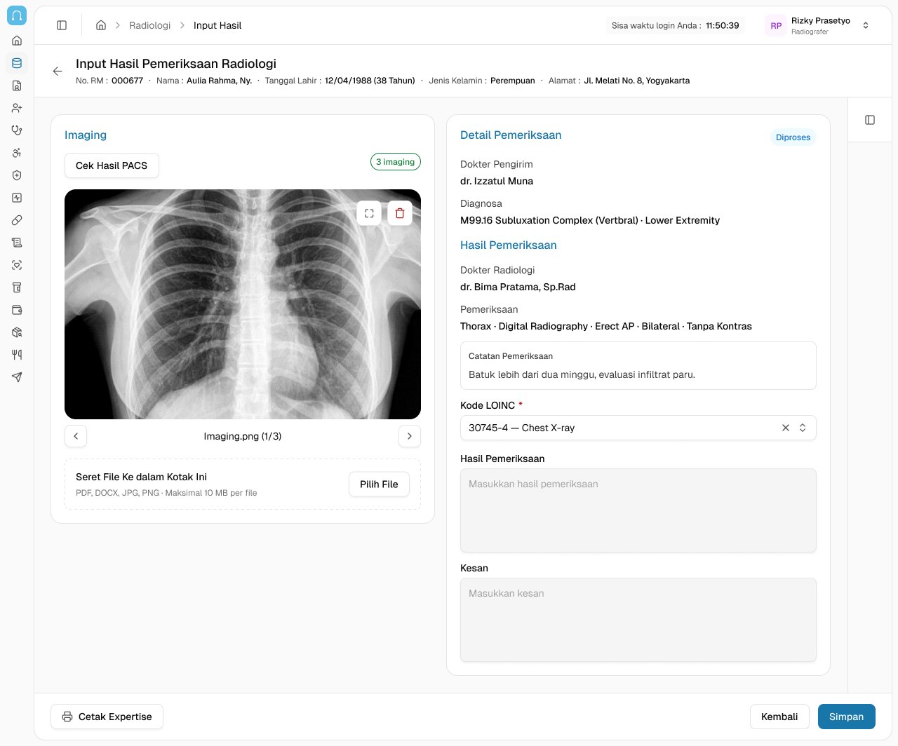
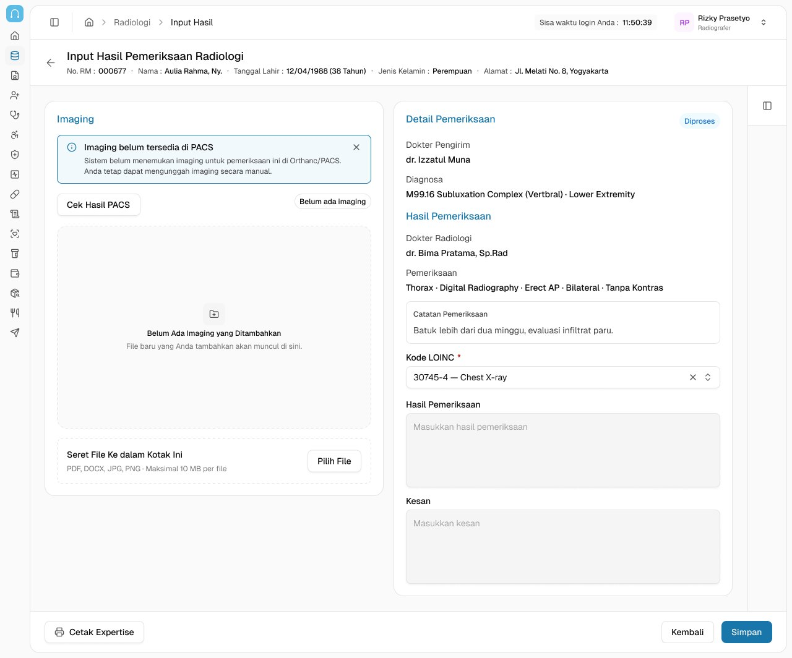
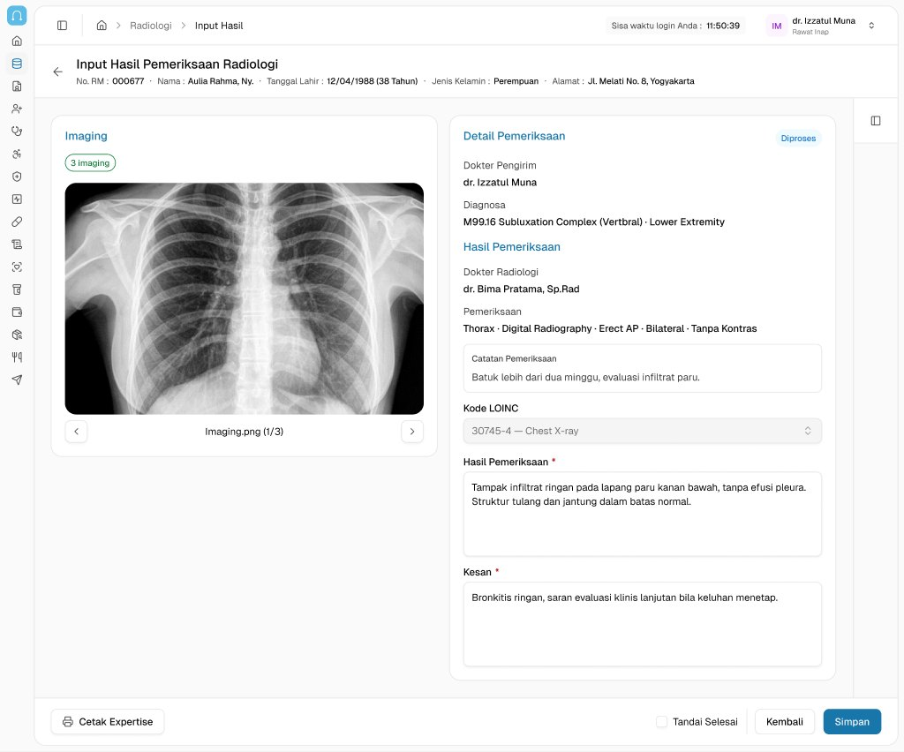
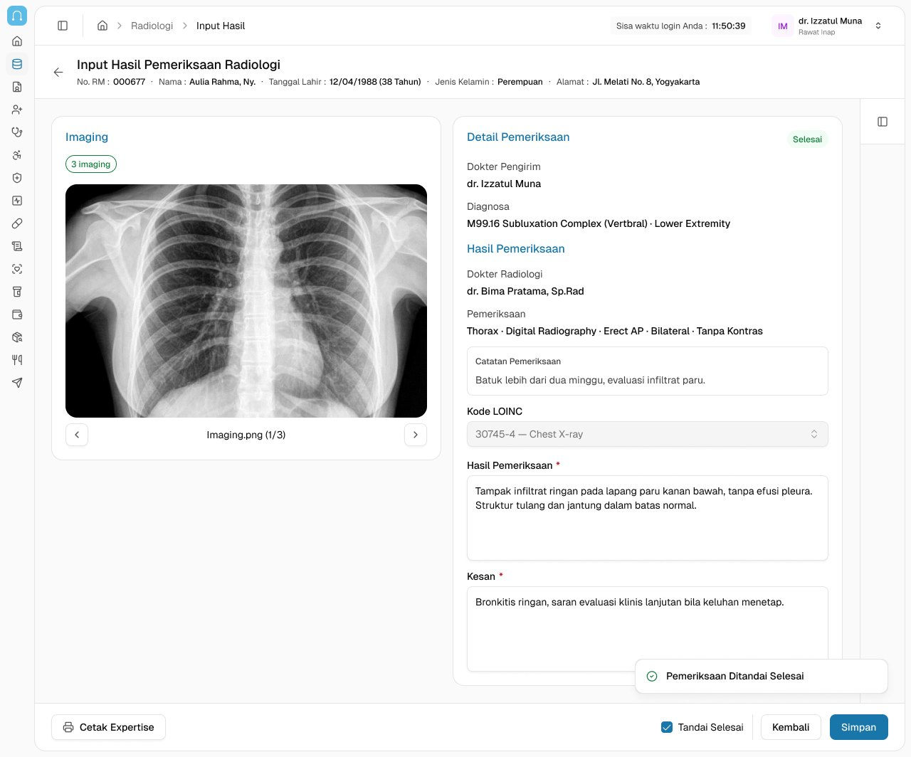
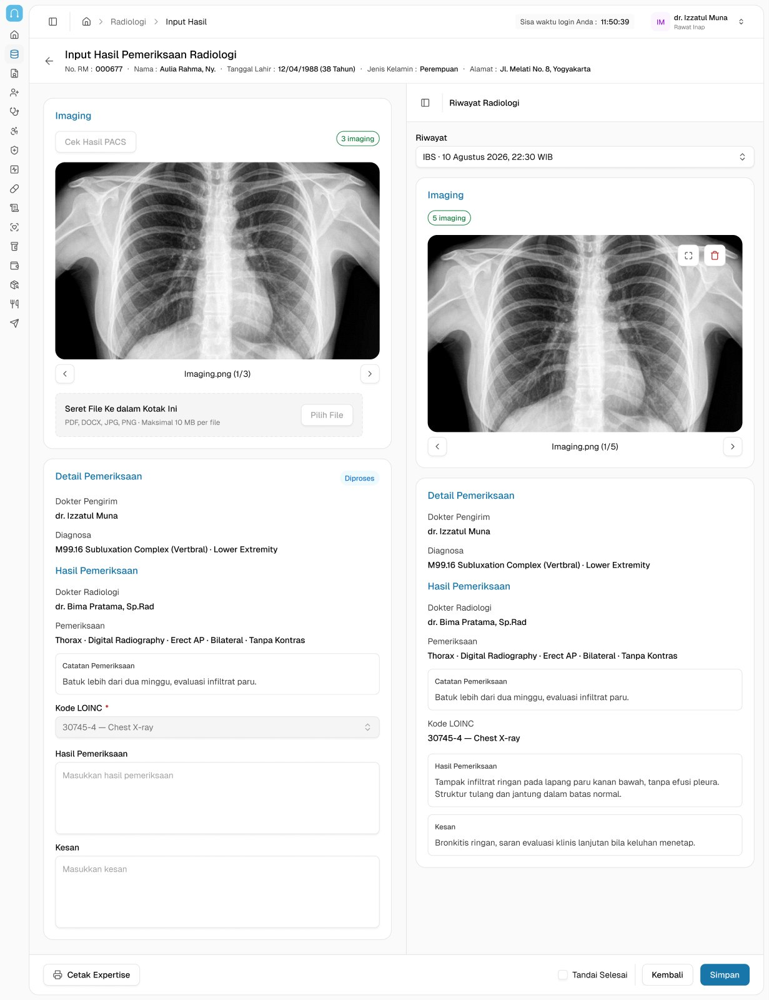

CASE FILE 05 · MEDICAL TECH · HOSPITAL INFORMATION MANAGEMENT SYSTEM
NEUROVI
A redesign of the page where radiologists write their expertise.
CLIENTTamtech International (Neurovi)
MY ROLEUI/UX Designer
PROJECT DURATION1 week · 2026
CASE FILE DECLASSIFIED
PROJECT GOALS
01Give every examination its own structured input.
02Support the radiologist’s reading and reporting efficiently.
03Prepare the page for PACS and SATUSEHAT integration.

SOURCE: Scientific American, 1896
FILE CONTENTS
Web AppHealthcareRedesignDesign System
Internal hospital system, so there is no public link. Screens use dummy patient data.
§01 — THE BRIEF
One order, many examinations, one crowded page.
Neurovi is a hospital information system built by Tamtech International. In its radiology module, radiologists open an order, read the images and write their expertise: the findings and the impression. The existing page (V1) handled a whole order as one block.
MY PARTI redesigned the page as V2 in 1 week, following the product brief: dashboard, imaging, expertise input and radiology history, for two roles.
SCOPEI designed the screens radiographers and radiologists work in every day: the order queue, the imaging view, the result form and the history panel.
THE CONSTRAINTThe hospital’s service flow stayed the same, so the new page had to fit how the radiology team already works, not ask them to change it.
§02 — THE STARTING POINT
What V1 looked like.

V1, the previous designPatient and doctor names are blurred.
The brief listed what was getting in the doctors’ way:
P-01All results of an order sat in one large input area.
P-02Imaging and expertise were mixed on the same screen, and doctors had to find the matching image themselves.
P-03With more than one radiology item, it was hard to tell the examinations apart.
P-04There was no way to compare with previous results.
P-05The page closed as soon as the doctor pressed Save.
§03 — DECISION 1/5 · DASHBOARD
Sort the queue by the stage of the work.
Tabs follow the real stages of an order, from Belum Dikonfirmasi to Menunggu Expertise and Selesai, each with a count. Every row shows the examination, its priority (Routine, CITO, STAT) and its status, so radiologists find their queue as soon as they open the module.
Information ArchitectureError Prevention

The “Menunggu Expertise” tab: the radiologist’s queue.§04 — DECISION 2/5 · IMAGING
Pair a missing image with a way forward.
The radiographer checks PACS from the order. If the images are found, they appear in a large preview with a counter. If not, a banner says so and manual upload stays open, so the examination isn’t stuck waiting on an integration.
Error PreventionUser Control

Found in PACS: preview, fullscreen, delete.

Not in PACS yet: manual upload as fallback.
§05 — DECISION 3/5 · ROLES
Lock what the role shouldn’t touch.
Radiographers and doctors work on the same page with different rights. For the radiographer, findings and impression stay locked; for doctors, edit rights follow the radiologist assigned to the examination. One page serves both roles without one overwriting the other’s work.
Error PreventionContextual Design
Radiographer viewChecks PACS or uploads the images. Findings and impression are locked.
Doctor viewReads the images and writes findings and impression. Edit rights follow the assigned radiologist, who marks the examination as done.
§06 — DECISION 4/5 · EXPERTISE
One examination, one result, one finish button.
Each examination keeps its own image, assigned radiologist and two separate, required fields: Hasil Pemeriksaan (findings) and Kesan (impression). “Tandai Selesai” finishes that examination alone; the page stays open with a confirmation and the status moves from Diproses to Selesai, so the doctor can still review what was written.
ClarityMicrointeractions

Before finishing · status: Diproses.

Marked as done · page stays open · Selesai.
§07 — DECISION 5/5 · HISTORY
Bring past results next to the current one.
V1 had no way to compare results. Now a side panel opens the patient’s radiology history without leaving the page. The doctor picks an earlier examination by date and sees its images and expertise beside the current input.
Contextual DesignUser Control

§08 — V1 VS V2
What changed for the doctor.
ASPECTV1 (BEFORE)V2 (AFTER)
StructureAll examinations in one input area.Each examination handled on its own, with its own radiologist and status.
ImagingUploaded manually; the doctor looks for the right image.Checked from PACS, with manual upload as a fallback, shown next to the examination it belongs to.
ComparisonNot available.Past results of the same examination open in a side panel.
After savingThe page closes.The page stays open for review, with a confirmation toast.
FinishingNo separate finish per examination.“Tandai Selesai” on each examination; its status changes to Selesai.
DataResults not separated per examination.Findings and impression kept apart, ready for SATUSEHAT’s Observation and DiagnosticReport.
§09 — REFLECTION
“In a clinical tool, small details carry weight: the right image next to the right examination, a field that is locked for the wrong role, a status you can trust.”
The core of this redesign was splitting one crowded page into clear pieces that match how the radiology team already works.
CASE FILE 05 · MEDICAL TECH · HOSPITAL INFORMATION MANAGEMENT SYSTEM
NEUROVI
A redesign of the page where radiologists write their expertise.
CLIENTTamtech International (Neurovi)
PROJECT DURATION1 week · 2026
MY ROLEUI/UX Designer
PROJECT GOALS
01Give every examination its own structured input.
02Support the radiologist’s reading and reporting efficiently.
03Prepare the page for PACS and SATUSEHAT integration.
SOURCE: Scientific American, 1896
FILE CONTENTS
Web AppHealthcareRedesignDesign System
Internal hospital system, so there is no public link. Screens use dummy patient data.
§01 — THE BRIEF
One order, many examinations, one crowded page.
Neurovi is a hospital information system built by Tamtech International. In its radiology module, radiologists open an order, read the images and write their expertise: the findings and the impression. The existing page (V1) handled a whole order as one block.
MY PARTI redesigned the page as V2 in 1 week, following the product brief: dashboard, imaging, expertise input and radiology history, for two roles.
SCOPEI designed the screens radiographers and radiologists work in every day: the order queue, the imaging view, the result form and the history panel.
THE CONSTRAINTThe hospital’s service flow stayed the same, so the new page had to fit how the radiology team already works, not ask them to change it.
§02 — THE STARTING POINT
What V1 looked like.
V1, the previous designPatient and doctor names are blurred.
The brief listed what was getting in the doctors’ way:
P-01All results of an order sat in one large input area.
P-02Imaging and expertise were mixed on the same screen, and doctors had to find the matching image themselves.
P-03With more than one radiology item, it was hard to tell the examinations apart.
P-04There was no way to compare with previous results.
P-05The page closed as soon as the doctor pressed Save.
§03 — DECISION 1/5 · DASHBOARD
Sort the queue by the stage of the work.
Tabs follow the real stages of an order, from Belum Dikonfirmasi to Menunggu Expertise and Selesai, each with a count. Every row shows the examination, its priority (Routine, CITO, STAT) and its status, so radiologists find their queue as soon as they open the module.
Information ArchitectureError Prevention
The “Menunggu Expertise” tab: the radiologist’s queue.§04 — DECISION 2/5 · IMAGING
Pair a missing image with a way forward.
The radiographer checks PACS from the order. If the images are found, they appear in a large preview with a counter. If not, a banner says so and manual upload stays open, so the examination isn’t stuck waiting on an integration.
Error PreventionUser Control
Found in PACS: preview, fullscreen, delete.Not in PACS yet: manual upload as fallback.§05 — DECISION 3/5 · ROLES
Lock what the role shouldn’t touch.
Radiographers and doctors work on the same page with different rights. For the radiographer, findings and impression stay locked; for doctors, edit rights follow the radiologist assigned to the examination. One page serves both roles without one overwriting the other’s work.
Error PreventionContextual Design
Radiographer viewChecks PACS or uploads the images. Findings and impression are locked.
Doctor viewReads the images and writes findings and impression. Edit rights follow the assigned radiologist, who marks the examination as done.
§06 — DECISION 4/5 · EXPERTISE
One examination, one result, one finish button.
Each examination keeps its own image, assigned radiologist and two separate, required fields: Hasil Pemeriksaan (findings) and Kesan (impression). “Tandai Selesai” finishes that examination alone; the page stays open with a confirmation and the status moves from Diproses to Selesai, so the doctor can still review what was written.
ClarityMicrointeractions
Before finishing · status: Diproses.Marked as done · page stays open · Selesai.§07 — DECISION 5/5 · HISTORY
Bring past results next to the current one.
V1 had no way to compare results. Now a side panel opens the patient’s radiology history without leaving the page. The doctor picks an earlier examination by date and sees its images and expertise beside the current input.
Contextual DesignUser Control
§08 — V1 VS V2
What changed for the doctor.
StructureV1 · All examinations in one input area.V2 · Each examination handled on its own, with its own radiologist and status.
ImagingV1 · Uploaded manually; the doctor looks for the right image.V2 · Checked from PACS, with manual upload as a fallback, shown next to the examination it belongs to.
ComparisonV1 · Not available.V2 · Past results of the same examination open in a side panel.
After savingV1 · The page closes.V2 · The page stays open for review, with a confirmation toast.
FinishingV1 · No separate finish per examination.V2 · “Tandai Selesai” on each examination; its status changes to Selesai.
DataV1 · Results not separated per examination.V2 · Findings and impression kept apart, ready for SATUSEHAT’s Observation and DiagnosticReport.
§09 — REFLECTION
“In a clinical tool, small details carry weight: the right image next to the right examination, a field that is locked for the wrong role, a status you can trust.”
The core of this redesign was splitting one crowded page into clear pieces that match how the radiology team already works.